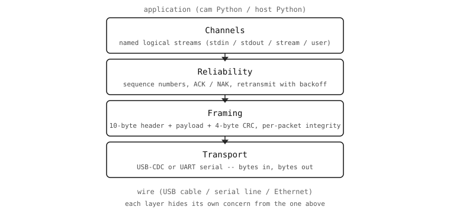

12.2. As quatro camadas¶
A biblioteca de protocolo é construída como uma pilha de quatro camadas, cada uma resolvendo um único problema e assente na camada abaixo. O resto do capítulo percorre a pilha de baixo para cima.

12.2.1. Transporte¶
Na base está o pipe de bytes entre a câmara e o host. A biblioteca de protocolo não se preocupa com qual transporta os bytes:
USB-CDC pela porta USB à qual a câmara está ligada. A opção predefinida e de maior largura de banda para todas as câmaras.
UART por um par de pinos GPIO da câmara ligados a um adaptador série no host. Útil em implementações sem interface gráfica onde a porta USB está ocupada ou não é fisicamente acessível.
O único trabalho do transporte é «bytes entram, bytes saem, por ordem». Tudo acima desta camada pressupõe que o transporte entrega os bytes na ordem em que foram escritos, mas admite que os próprios bytes possam ser corrompidos ou que a ligação caia completamente. Rajadas com perdas (alguns bytes em falta) e quedas limpas (toda a ligação desaparece durante algum tempo e depois regressa) são tratadas nas camadas superiores.
12.2.2. Enquadramento¶
A camada seguinte impõe estrutura ao fluxo de bytes. Cada mensagem torna-se um pacote – um cabeçalho de 10 bytes seguido de um payload seguido de um trailer de 4 bytes. O cabeçalho transporta:
Uma palavra de sincronização de 2 bytes (
0xD5AA) que permite ao recetor encontrar novamente o início de um pacote após um dessincronismo.Um número de sequência de 1 byte usado pela camada de fiabilidade.
Um ID de canal de 1 byte que indica a que fluxo lógico o pacote pertence.
Um campo de sinalizadores de 1 byte para bits de ACK / NAK / fragmento / evento.
Um opcode de 1 byte que distingue comandos de protocolo, comandos de sistema e comandos de canal.
Um comprimento de payload de 2 bytes.
Um CRC de 2 bytes sobre os oito bytes anteriores do cabeçalho.
O payload vem a seguir, depois um CRC de 4 bytes sobre o próprio payload. Os dois CRCs detetam corrupção de forma independente: um bit invertido no cabeçalho invalida o CRC do cabeçalho, e o recetor pode descartar o pacote sem precisar de ler o payload.
12.2.3. Fiabilidade¶
A camada de fiabilidade transforma «pacotes que podem chegar» em «pacotes que chegaram.» Regista os números de sequência no cabeçalho, pede ao outro lado que envie acknowledgements para cada pacote que o requeira, e retransmite quando um acknowledgement não chega dentro de um timeout. Por predefinição, o timeout de retransmissão começa em 500 ms e duplica a cada tentativa, com três tentativas antes de desistir.
Cada um desses comportamentos é configurável na chamada protocol.init(): o ACK pode ser desativado para fluxos unidirecionais, a validação de CRC pode ser ignorada em transportes perfeitamente limpos, e os parâmetros de retransmissão podem ser ajustados para ligações lentas ou de elevada latência.
12.2.4. Canais¶
A camada superior é o que o código de aplicação vê. Um canal é um fluxo lógico nomeado identificado por um ID de canal de 0 a 31. Até 32 canais podem coexistir num único transporte; cada um é independente dos outros, endereçado pelo seu ID no cabeçalho de cada pacote. A câmara arranca com quatro canais integrados – stdin, stdout, stream e profile – e o código de aplicação regista mais por cima chamando protocol.register() com uma classe Python.
As quatro camadas não misturam preocupações. O enquadramento não sabe nada sobre canais; a fiabilidade não sabe nada sobre o conteúdo dos pacotes; a camada de canais não sabe como chegam os bytes. É essa separação que faz com que uma troca de transporte (de USB para UART, por exemplo) não se propague até ao código de canais, e que torna o resto do capítulo percorrível uma camada de cada vez.